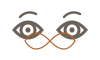
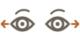
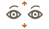
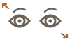

Eye Exercises
14 exercises. Eye exercises to rest tired eyes during screen time: blinking, focus shifts, palming and more.
Warmup blinking
Focus training
Movement tracking
- Eye RotationSlow circles around the full range of vision

Figure-8 TracingTracing an imaginary sideways figure-8
Side-to-Side ShiftLooking fully left, then fully right
Up-and-Down ShiftLooking fully up, then fully down
Diagonal ShiftLooking corner to corner, both directions
Relaxation care
Nothing found. Try another word.